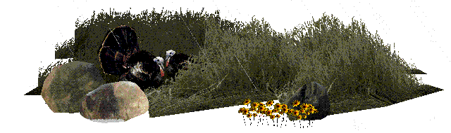

Robbie Barrat
generative artist
Interested in the connection between using a programming language to create artwork and God's creation of the world through language.
Represented by l'Avant Galerie Vossen
twitter: @videodrome
instagram: @robbie.exe
email address: robbiebarrat@gmail.com

Artwork
-
Playstation 1 (2026-current)
Generative artwork (flower pieces, landscapes) running on the playstation 1, some video sculpture (furniture) with 16:9 CRT tubes and ps1 console inside.
-
Big Buck Hunter: Restoration (2022-2026)
Multi-year project, reverse engineering and modification of Incredible Technologies' 2000 arcade title "Big Buck Hunter", to 'restore' the game world back into a pre-fall/edenic state.
-
Landscapes (2021-2026)
Landscapes made using primarially generative techniques, with light use of neural networks (cycleGAN/pix2pixHD) incorporated into the process.
-
Landscapes / Skulls in collaboration with Ronan Barrot (2024)
Series of work in collaboration with Ronan Barrot, focusing primarially on landscapes.
-
Tapestry collaboration with Jonas Jeppesen (2022)
Landscape tapestries produced in collaboration with Jonas Jeppesen.
-
L-systems studies / e-Ink work (2021-2025)
Series of work of L-systems (Lindenmayer systems), generative flower pieces usually presented frozen on disconnected e-Ink panels.
-
Counter-Strike: Afterstory / Counter-Strike paintings (2020-2026)
Series of work heavily inspired by "Velvet Strike", character studies of the T and CT from CS 1.6 relating to the popularity of Counter-Strike Surf versus normal gamemodes. Some paintings of various Counter-Strike maps/gamemodes.
-
"Radiate" (2021)
Performance and video sculpture. Collaboration between Joeri Woudstra and Robbie Barrat. Took place at "Stroom Den Haag" on March 20, 2021
-
Landscapes after Gardening Software (Saint Nazaire) (2019-2023)
Landscapes process that came directly from working with the Gardening Software (the entry below this one).
-
Gardening Software (2019-2023)
Investigation / study of visual artifacts found in older 3D software that evolved into a landscapes process.
-
Figure Studies (2019-2020)
Seeking to try and do exercises like a traditional artist instead of just trying to make finished artworks.
-
ACNE STUDIOS x ROBBIE BARRAT (Jan 19, 2020)
A collaboration with Swedish fashion house Acne Studios for their Fall Winter 2020 collection.
-
BARRAT/BARROT: Infinite Skulls (Feb 2019)
A collaboration and confrontation between AI artist Robbie Barrat and French painter Ronan Barrot. Jason Bailey (Artnome) wrote a wonderful article about this work here
-
Balenciaga (2018-2019)
Project using AI (densepose+pix2pixHD) to create imaginary looks / fanart of Balenciaga's FW18 show. Also read the SSENSE Article
-
GPT-2 After Sol LeWitt (Sept 2019)
Using OpenAI's language model to generate drawing rules, interpreted into generative sketches.
-
GAN Discriminator Collaging (2019)
Attempt at producing imagery with only using the Discriminator of a GAN (Generative Adversarial Network) and not the Generator (the part which generates images).
-
Corrections Series (March 2019)
Work seeking to adjust images of painted nude portraits to reveal the neural network's internal idea of the body.
-
Nude Portraits + Landscapes (Artnome Article) (April 2018)
Article by Jason Bailey covering some of my first AI generated nude portraits + landscapes.
Interviews + Press
Early Work + Archives
Other posts + Writing